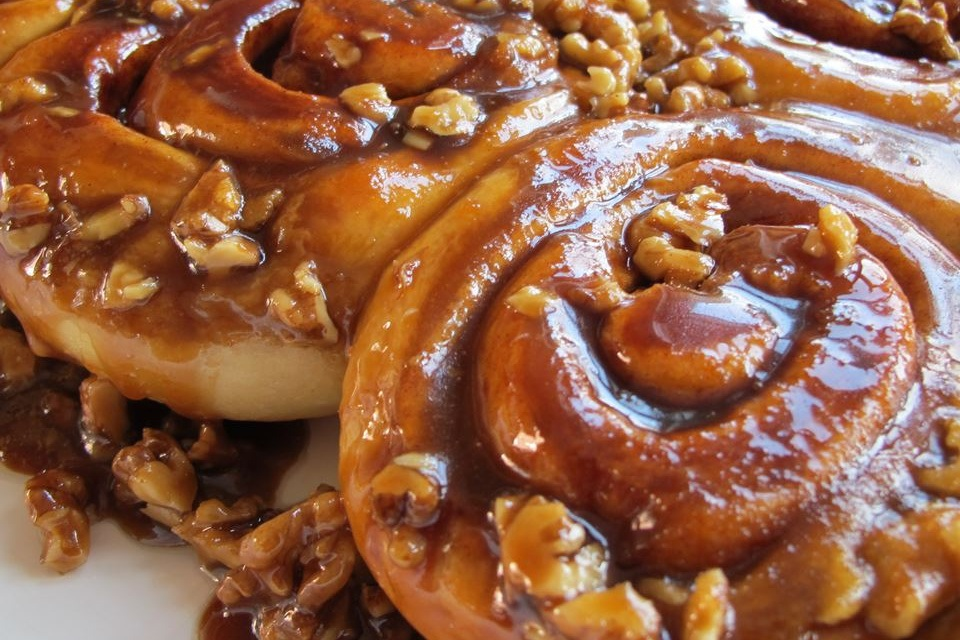

Cinnamon Rolls

Description
These buns are sooo good hot from the oven when they're gooey and warm.
Ingredients
- 1 teaspoon white sugar
- 1 package active dry yeast
- 1/2 cup warm water
- 1/2 cup milk
- 1/4 cup white sugar
- 1/4 cup butter
- 1 teaspoon salt
- 2 eggs beaten
- 4 cups all-purpose flour
- 1 cup chopped pecans, divided
- 3/4 cup brown sugar
- 1 tablespoon ground cinnamon
- 1/2 cup melted butter
Steps
- In a small bowl, dissolve 1 teaspoon sugar and yeast in warm water. Let stand until creamy, about 10 minutes. Warm the milk in a small saucepan until it bubbles, then remove from heat. Mix in 1/4 cup sugar, 1/4 cup butter and salt; stir until melted. Let cool until lukewarm.
- In a large bowl, combine the yeast mixture, milk mixture, eggs and 1 1/2 cup flour; stir well to combine. Stir in the remaining flour, 1/2 cup at a time, beating well after each addition. When the dough has pulled together, turn it out onto a lightly floured surface and knead until smooth and elastic, about 8 minutes.
- Lightly oil a large bowl, place the dough in the bowl and turn to coat with oil. Cover with a damp cloth and let rise in a warm place until doubled in volume, about 1 hour.
- While dough is rising, melt 3/4 cup butter in a small saucepan over medium heat. Stir in 3/4 cup brown sugar, whisking until smooth. Pour into greased 9x13 inch baking pan. Sprinkle bottom of pan with 1/2 cup pecans; set aside. Melt remaining butter; set aside. Combine remaining 3/4 cup brown sugar, 1/2 cup pecans, and cinnamon; set aside.
- Turn dough out onto a lightly floured surface, roll into an 18x14 inch rectangle. Brush with 2 tablespoons melted butter, leaving 1/2 inch border uncovered; sprinkle with brown sugar cinnamon mixture. Starting at long side, tightly roll up, pinching seam to seal. Brush with remaining 2 tablespoons butter. With serrated knife, cut into 15 pieces; place cut side down, in prepared pan. Cover and let rise for 1 hour or until doubled in volume. Meanwhile, preheat oven to 375 degrees F (190 degrees C).
- Bake in preheated oven for 25 to 30 minutes, until golden brown. Let cool in pan for 3 minutes, then invert onto serving platter. Scrape remaining filling from the pan onto the rolls.